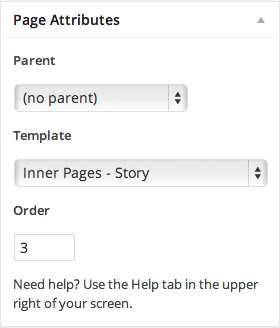

Story Page
7.1 How to add content to the Story Page?
This page uses "Inner Pages - Story" template from the "Page Attributes"!

7.2 Top Image
If you want to have the top image like in the live preview you need to upload the featured image. Featured image size used in live preview is 2600x700px. If you don't want to have the top image just don't upload the featured image.

7.3 Story Content Blocks

7.3.1. Content Block One
Add the content inside the page editor and it will show up inside the beige background box.

This is the content we added inside the editor:
7.3.2. Content Block Two
Story Page uses the same widgetized areas as the home page: "Widget Area Two" or/and "Widget Area Three".

Using "Jetpack Widget Visibility" plugin you are able to choose which widget will show up on which page inside the same sidebar. Read more about it here: http://wordpress.org/plugins/jetpack-widget-visibility/
7.3.2. Content Block Three
Story Page uses the same widgetized areas as the home page: "Widget Area Four".

Using "Jetpack Widget Visibility" plugin you are able to choose which widget will show up on which page inside the same sidebar. This means we used "Wine Products" widget on the home page and "Timeline Posts" on the Story page using the same sidebar and the "Jetpack Widget Visibility" plugin. Read more about it here: http://wordpress.org/plugins/jetpack-widget-visibility/
Team Page
7.4 How to add content to the Team Page?
This page uses "Grid Page" template from the "Page Attributes"!

To create pages using "Grid Page" template you'll need to create or edit a page, and assign it to the "Grid Page" template from the Page Attributes module. This page displays all child pages of this page with featured images in a grid. It's perfect for your Case Studies, Team, or Services page for instance. Learn more about creating pages and sub-pages.

7.5 Top Image
If you want to have the top image like in the live preview you need to upload the featured image. Featured image size used in live preview is 2600x700px. If you don't want to have the top image just don't upload the featured image.